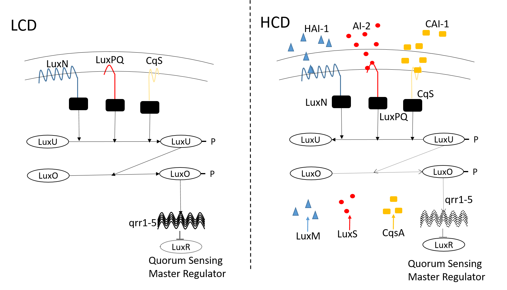

Multi-pathway Bacterial Quorum Sensing
Quorum sensing (QS) is a form of cell-cell communication that allows bacteria to measure the local population density, and to use this as a cue to regulate gene expression, resulting in various forms of collective bacterial response, including virulence, biofilm formation and bioluminescence. In particular, high population densities lead to high intracellular signal concentrations through diffusive exchange with the extracellular environment, triggering biochemical reactions that activate the expression of QS-controlled genes. Understanding QS leads to many applications, such as reducing marine biofouling by adding non-toxic QS inhibitors in the coating of boats and controlling bacterial infections by manipulating their QS communication systems.
Bacterial QS depends on the production, secretion, and detection of signaling molecules known as autoinducers (AIs). In the case of V. harveyi, three kinds of AIs have been identified: HAI-1, CAI-1 and AI-2. Each autoinducer is detected by its corresponding cognate receptor, LuxN, CqsS, and LuxPQ, respectively, and integrated into the phosphorylation-dephosphorylation cycle (PdPC) of a downstream protein LuxU. At a low cell density (LCD), in the absence of AI, an unbound receptor functions as a kinase and phosphorylates the protein LuxU. This leads to the phosphorylation of a second protein LuxO and subsequent activation of small non-coding RNAs (sRNAs) known as qrr 1-5. The latter repress the translation of the mRNA that encodes the master quorum-sensing regulator LuxR, which turns QS expression 'OFF'. On the other hand, at a high cell density (HCD), AI binds to its receptor, switching the action of the latter to a phosphatase, which in turn drains the phosphate group from LuxO and LuxU. This results in the deactivation of the sRNAs and the production of LuxR, which turns QS ‘ON’.
Signal Integration
Having a multi-pathway structure allows the bacteria to intake different types of signal and potentially have a better measurement of its environment. In the following paper [1], we investigate the possible role of parallel signaling pathways by developing a mathematical model of QS in V. harveyi at both the single-cell and population levels. First we explore how signal integration may be achieved at the single-cell level, and how different model parameters influence the process. We then consider two examples of signal integration at the population level: a one-population model responding to two environmental cues (cell density and mass transfer), and a two-population model with distinct cell densities. In each case, we use contraction analysis to reduce the population model to an effective single-cell model.
[1] Fan, Gaoyang, and Paul C. Bressloff. Population Model of Quorum Sensing with Multiple Parallel Pathways. Bulletin of mathematical biology 79.11 (2017): 2599-2626.
- Key words:
Population Model
Diffusion Sensing
System Reduction
Signal Differentiation
Our previous study indicates that the multi-pathway structure allows the bacteria to have a better recognition of their social and physical environment. However, when all pathways are integrated into one PdPC, how do cells differentiate signals? It has been shown that in V. harveyi quorum sensing circuits, there exists a feedback loop involving qrr repressing the production of receptor LuxN (Tu, et al., 2010). Experimental data suggest that the role of the LuxN feedback loop is to adjust the relative sensitivity to AI signals from a low cell density environment to a high cell density environment (Teng, et al., 2011). In the following paper [2], we propose a weight control mechanism, in which QS uses feedback loops to ‘decode’ the integrated signals by actively changing the sensitivity in different pathways. We first use a slow/fast analysis to reduce a single-cell model to a planar dynamical system involving the concentrations of phosphorylated signaling protein LuxU and a small non-coding RNA. In addition to identifying the weight control mechanism, we show that adding a feedback loop can lead to a bistable QS response in certain parameter regimes. We then combine the slow/fast analysis with a contraction mapping theorem in order to reduce a population model to an effective single-cell model, and show how the weight control mechanism allows bacteria to have a finer discrimination of their social and physical environment.
[2] Fan, Gaoyang, and Paul C. Bressloff. Modeling the Role of Feedback in the Adaptive Response of Bacterial Quorum Sensing. Bulletin of mathematical biology (2019) In press
- Key words:
Adaptive Response
Feedback Pathways
Diffusion Sensing